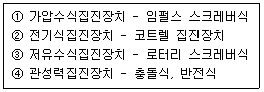
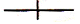
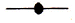
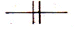
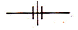
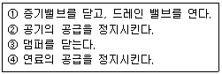
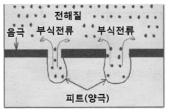

에너지관리기능사 (2013-04-14 기출문제)
1과목: 임의 구분
1. 다음 각각의 자동제어에 관한 설명 중 맞는 것은?
- 목표 값이 일정한 자동제어를 추치제어라고 한다.
- 어느 한쪽의 조건이 구비되지 않으면 다른 제어를 정지 시키는 것은 피드백 제어이다.
- 결과가 원인으로 되어 제어단계를 진행하는 것을 인터록 제어라고 한다.
- 미리 정해진 순서에 따라 제어의 각 단계를 차례로 진행하는 제어는 시퀀스 제어이다.
(정답률: 92%)

2. 난방 및 온수 사용열량이 400,000kcal/h인 건물에, 효율 80%인 보일러로서 저위발열량 10,000kcal/Nm3인 기체연료를 연소시키는 경우, 시간당 소요연료량은 약 몇 Nm3/h 인가?
- 45
- 60
- 56
- 50
(정답률: 66%)
3. 다음 중 여과식 집진장치의 종류가 아닌 것은?
- 유수식
- 원통식
- 평판식
- 역기류 분사식
(정답률: 55%)
4. 보일러의 안전장치와 거리가 가장 먼 것은?
- 과열기
- 안전밸브
- 저수위 경보기
- 방폭문
(정답률: 88%)
5. 보일러 마력(Boiler Horsepower)에 대한 정의로 가장 옳은 것은?
- 0℃ 물 15.65㎏을 1시간에 증기로 만들 수 있는 능력
- 100℃ 물15.65㎏을 1시간에 증기로 만들 수 있는 능력
- 0℃ 물 15.65㎏을 10분에 증기로 만들 수 있는 능력
- 100℃ 물15.65㎏을 10분에 증기로 만들 수 있는 능력
(정답률: 86%)
6. 엔탈피가 25kcal/㎏ 인 급수를 받아 1시간당 20000㎏의 증기를 발생하는 경우 이 보일러의 매시 환산 증발량은 몇 ㎏/h 인가? (단, 발생증기의 엔탈피는 725kcal/㎏이다)
- 3,246 ㎏/h
- 6,493 ㎏/h
- 12,987 ㎏/h
- 25,974 ㎏/h
(정답률: 58%)
7. 수트 블로워에 관한 설명으로 잘못된 것은?
- 전열면 외측의 그을음 등을 제거하는 장치이다.
- 분출기 내의 응축수를 배출시킨 후 사용한다.
- 부하가 50% 이하인 경우에만 블로우 한다.
- 블로우 시에는 댐퍼를 열고 흡입통풍을 증가시킨다.
(정답률: 74%)
8. 보일러에 부착하는 압력계의 취급상 주의사항으로 틀린 것은?
- 온도가 353K 이상 올라가지 않도록 한다.
- 압력계는 고장이 날 때 까지 계속 사용하는 것이 아니라 일정사용 시간을 정하고 정기적으로 교체 하여야 한다.
- 압력계 사이폰 관의 수직부에 콕크를 설치하고 콕크의 핸들이 축 방향과 일치할 때에 열린 것이어야 한다.
- 부르돈관 내에 직접 증기가 들어가면 고장이 나기 쉬우므로 사이폰 관에 물이 가득차지 않도록 한다.
(정답률: 72%)
9. 보일러 저수위 경보장치 종류에 속하지 않는 것은?
- 플로트식
- 압력제어식
- 열팽창관식
- 전극식
(정답률: 47%)
10. 고체연료에서 탄화가 많이 될수록 나타나는 현상으로 옳은 것은?
- 고정탄소가 감소하고, 휘발분은 증가되어 연료비는 감소한다.
- 고정탄소가 증가하고, 휘발분은 감소되어 연료비는 감소한다.
- 고정탄소가 감소하고, 휘발분은 증가되어 연료비는 증가한다.
- 고정탄소가 증가하고, 휘발분은 감소되어 연료비는 증가한다.
(정답률: 63%)
11. 공기예열기에서 전열 방법에 따른 분류에 속하지 않는 것은?
- 열팽창식
- 재생식
- 히트파이프식
- 전도식
(정답률: 40%)
12. 다음 보기에서 그 연결이 잘못된 것은?

- ①
- ②
- ③
- ④
(정답률: 54%)
13. 보일러 자동제어에서 급수제어의 약호는?
- A.B.C
- F.W.C
- S.T.C
- A.C.C
(정답률: 79%)
14. 외분식 보일러의 특징 설명으로 잘못 된 것은?
- 연소실의 크기나 형상을 자유롭게 할 수 있다.
- 연소율이 좋다.
- 사용연료의 선택이 자유롭다.
- 방사 손실이 거의 없다.
(정답률: 71%)
15. 원통형 보일러와 비교할 때 수관식 보일러의 특징 설명으로 틀린 것은?
- 수관의 관경이 적어 고압에 잘 견딘다.
- 보유수가 적어서 부하변동 시 압력변화가 적다.
- 보일러수의 순환이 빠르고 효율이 높다.
- 구조가 복잡하여 청소가 곤란하다.
(정답률: 69%)
16. 절대온도 380 K를 섭씨온도로 환산하면 약 몇 ℃인가?
- 107℃
- 380℃
- 653℃
- 926℃
(정답률: 75%)
17. 연료의 연소 시 과잉공기계수(공기비)를 구하는 올바른 식은?
- (연소가스량 / 이론공기량)
- (실제공기량 / 이론공기량)
- (배기가스량 / 사용공기량)
- (사용공기량 / 배기가스량)
(정답률: 86%)
18. 증기 중에 수분이 많을 경우의 설명으로 잘못된 것은?
- 건조도가 저하된다.
- 증기의 손실이 많아진다.
- 증기 엔탈피가 증가한다.
- 수격작용이 발생할 수 있다.
(정답률: 70%)
19. 다음 중 고체연료의 연소방식에 속하지 않는 것은?
- 화격자 연소방식
- 확산 연소방식
- 미분탄 연소방식
- 유동층 연소방식
(정답률: 75%)
20. 보일러 열정산 시 증기의 건도는 몇 % 이상에서 시험함을 원칙으로 하는가?
- 96%
- 97%
- 98%
- 99%
(정답률: 79%)
2과목: 임의 구분
21. 어떤 거실의 난방부하가 5,000kcal/h이고, 주철제 온수 방열기로 난방할 때 필요한 방열기의 쪽수(절수)는? (단, 방열기 1쪽당 방열면적은 0.26m2 이고, 방열량은 표준 방열량으로 한다.)
- 11
- 21
- 30
- 43
(정답률: 60%)
22. 점화장치로 이용되는 파이로트 버너는 화염을 안정시키기 위해 보염식 버너가 이용되고 있는데, 이 보염식 버너의 구조에 관한 설명으로 가장 옳은 것은?
- 동일한 화염 구멍이 8~9개 내외로 나뉘어져 있다.
- 화염 구멍이 가느다란 타원형으로 되어 있다.
- 중앙의 화염 구멍 주변으로 여러 개의 작은 화염 구멍이 설치되어 있다.
- 화염 구멍부 구조가 원뿔 형태와 같이 되어 있다.
(정답률: 75%)
23. 압축기 진동과 서징, 관의 수격작용, 지진 등에서 발생하는 진동을 억제하는 데 사용되는 지지 장치는?
- 벤드벤
- 플랩 밸브
- 그랜드 패킹
- 브레이스
(정답률: 80%)
24. 관의 결합방식 표시방법 중 플랜지식의 그림기호로 맞는 것은?




(정답률: 81%)
25. 평소 사용하고 있는 보일러의 가동 전 준비사항으로 틀린 것은?
- 각종기기의 기능을 검사하고 급수계통의 이상 유무를 확인한다.
- 댐퍼를 닫고 프리퍼지를 행한다.
- 각 밸브의 개폐상태를 확인한다.
- 보일러수의 물의 높이는 상용수위로 하여 수면계로 확인한다.
(정답률: 85%)
26. 다음 보기 중에서 보일러의 운전정지 순서를 올바르게 나열한 것은?

- ②→④→①→③
- ④→②→①→③
- ③→④→①→②
- ①→④→②→③
(정답률: 84%)
27. 증기 트랩의 설치 시 주의사항에 관한 설명으로 틀린 것은?
- 응축수 배출점이 여러 개가 있을 경우 응축수 배출점을 묶어서 그룹 트랩핑을 하는 것이 좋다.
- 증기가 트랩에 유입되면 즉시 배출시켜 운전에 영향을 미치지 않도록 하는 것이 필요하다.
- 트랩에서의 배출관은 응축수 회수주관의 상부에 연결하는 것이 필수적으로 요구되며, 특히 회수주관이 고가배관으로 되어있을 때에는 더욱 주의하여 연결하여야 한다.
- 증기트랩에서 배출되는 응축수를 회수하여 재활용하는 경우에 응축수 환수관 내에는 원하지 않는 배압이 형성되어 증기트랩의 용량에 영향을 미칠 수 있다.
(정답률: 53%)
28. 보일러의 자동 연료차단장치가 작동하는 경우가 아닌 것은?
- 최고사용압력이 0.1MPa 미만인 주철제 온수보일러의 경우 온수온도가 1⑤ ℃인 경우
- 최고사용압력이 0.1MPa를 초과하는 증기보일러에서 보일러의 저수위 안전장치가 작동할 때
- 관류보일러에 공급하는 급수량이 부족한 경우
- 증기압력이 설정압력보다 높은 경우
(정답률: 63%)
29. 회전이음, 지블이음 등으로 불리며, 증기 및 온수난방배관용으로 사용하고 현장에서 2개 이상의 엘보를 조립해서 설치하는 신축이음은?
- 벨로즈형 신축이음
- 루푸형 신축이음
- 스위블형 신축이음
- 슬리브형 신축이음
(정답률: 77%)
30. 파이프 또는 이음쇠의 나사이음 분해 조립 시, 파이프 등을 회전시키는 데 사용되는 공구는?
- 파이프 리머
- 파이프 익스펜더
- 파이프 렌치
- 파이프 커터
(정답률: 84%)
31. 다음 중 수면계의 기능시험을 실시해야할 시기로 옳지 않은 것은?
- 보일러를 가동하기 전
- 2개의 수면계의 수위가 동일할 때
- 수면계 유리의 교체 또는 보수를 행하였을 때
- 프라이밍, 포밍 등이 생길 때
(정답률: 74%)
32. 보일러 자동제어에서 신호전달 방식 종류에 해당 되지 않는 것은?
- 팽창식
- 유압식
- 전기식
- 공기압식
(정답률: 74%)
33. 액체연료의 일반적인 특징에 관한 설명으로 틀린 것은?
- 유황분이 없어서 기기 부식의 염려가 거의 없다.
- 고체 연료에 비해서 단위 중량당 발열량이 높다.
- 연소효율이 높고 연소조절이 용이하다.
- 수송과 저장 및 취급이 용이하다.
(정답률: 69%)
34. 다음 중 보일러 스테이의 종류에 해당되지 않는 것은?
- 거싯(gusset)스테이
- 바(bar)스테이
- 튜브(tube)스테이
- 너트(nut)스테이
(정답률: 78%)
35. 어떤 물질의 단위질량(1㎏)에서 온도를 1℃ 높이는 데 소요되는 열량을 무엇이라고 하는가?
- 열용량
- 비열
- 잠열
- 엔탈피
(정답률: 70%)
36. 보일러에서 카본이 생성되는 원인으로 거리가 먼 것은?
- 유류의 분무상태 또는 공기와의 혼합이 불량할 때
- 버너 타일공의 각도가 버너의 화염각도 보다 작은 경우
- 노통보일러와 같이 가느다란 노통을 연소실로 하는 것에서 화염각도가 현저하게 작은 버너를 설치하고 있는 경우
- 직립보일러와 같이 연소실의 길이가 짧은 노에다가 화염의 길이가 매우 긴 버너를 설치하고 있는 경우
(정답률: 48%)
37. 다음 보일러 중 특수열매체 보일러에 해당 되는 것은?
- 타쿠마 보일러
- 카네크롤 보일러
- 슐쳐 보일러
- 하우덴 존슨 보일러
(정답률: 54%)
38. 유류보일러의 자동장치 점화방법의 순서가 맞는 것은?
- 송풍기 기동→연료펌프 기동→프리퍼지→점화용 버너 착화→주버너 착화
- 송풍기 기동→프리퍼지→점화용 버너 착화→연료펌프 기동→주버너 착화
- 연료펌프 기동→점화용 버너 착화→프리퍼지→주버너 착화→송풍기 기동
- 연료펌프 기동→주버너 착화→점화용 버너 착화→프리퍼지→송풍기 기동
(정답률: 56%)
39. 보일러의 기수분리기를 가장 옳게 설명한 것은?
- 보일러에서 발생한 증기 중에 포함되어 있는 수분을 제거하는 장치
- 증기 사용처에서 증기 사용 후 물과 증기를 분리하는 장치
- 보일러에 투입되는 연소용 공기 중의 수분을 제거하는 장치
- 보일러 급수 중에 포함되어 있는 공기를 제거하는 장치
(정답률: 72%)
40. 액상 열매체 보일러시스템에서 열매체유의 액팽창을 흡수하기 위한 팽창탱크의 최소 체적(VT)을 구하는 식으로 옳은 것은? (단, VE는 승온 시 시스템 내의 열매체유 팽창량, VM은 상온 시 탱크 내의 열매체유 보유량이다.)
- VT = VE＋VM
- VT = VE＋2VM
- VT = 2VE＋VM
- VT = 2VE＋2VM
(정답률: 70%)
3과목: 임의 구분
41. 진공환수식 증기난방 배관시공에 관한 설명 중 맞지 않는 것은?
- 증기주관은 흐름 방향에 1/200 ~ 1/300의 앞내림 기울기로 하고 도중에 수직 상향부가 필요한 때 트랩장치를 한다.
- 방열기 분기관 등에서 앞단에 트랩장치가 없을 때는 1/50~1/100의 앞올림 기울기로 하여 응축수를 주관에 역류시킨다.
- 환수관에 수직 상향부가 필요한 때는 리프트 피팅을 써서 응축수가 위쪽으로 배출하게 한다.
- 리프트 피팅은 될 수 있으면 사용개소를 많게 하고 1단을 2.5m 이내로 한다.
(정답률: 80%)
42. 보일러 사고의 원인 중 보일러 취급상의 사고원인이 아닌 것은?
- 재료 및 설계불량
- 사용압력초과 운전
- 저수위 운전
- 급수처리 불량
(정답률: 90%)
43. 연료의 완전연소를 위한 구비조건으로 틀린 것은?
- 연소실 내의 온도는 낮게 유지할 것
- 연료와 공기의 혼합이 잘 이루어지도록 할 것
- 연료와 연소장치가 맞을 것
- 공급 공기를 충분히 예열시킬 것
(정답률: 89%)
44. 천연고무와 비슷한 성질을 가진 합성고무로서 내유성, 내후성, 내산화성, 내열성 등이 우수하며, 석유용매에 대한 저항성이 크고 내열도는 -46℃~121℃ 범위에서 안정한 패킹 재료는?
- 과열 석면
- 네오플렌
- 테프론
- 하스텔로이
(정답률: 68%)
45. 파이프 커터로 관을 절단하면 안으로 거스러미(burr)가 생기는데 이것을 능률적으로 제거하는데 사용되는 공구는?
- 다이 스토크
- 사각줄
- 파이프 리머
- 체인 파이프렌치
(정답률: 87%)
46. 증기난방의 분류 중 응축수 환수방식에 의한 분류에 해당되지 않는 것은?
- 중력환수방식
- 기계환수방식
- 진공환수방식
- 상향환수방식
(정답률: 71%)
47. 그림과 같이 개방된 표면에서 구멍 형태로 깊게 침식하는 부식을 무엇이라고 하는가?

- 국부부식
- 그루빙(grooving)
- 저온부식
- 점식(pitting)
(정답률: 77%)
48. 가스 폭발에 대한 방지대책으로 거리가 먼 것은?
- 점화 조작 시에는 연료를 먼저 분무시킨 후 무화용 증기나 공기를 공급한다.
- 점화할 때에는 미리 충분한 프리퍼지를 한다.
- 연료속의 수분이나 슬러지 등은 충분히 배출한다.
- 점화전에는 중유를 가열하여 필요한 점도로 해둔다
(정답률: 74%)
49. 주증기관에서 증기의 건도를 향상 시키는 방법으로 적당하지 않은 것은?
- 가압하여 증기의 압력을 높인다.
- 드레인 포켓을 설치한다.
- 증기 공간 내에 공기를 제거 한다.
- 기수분리기를 사용한다.
(정답률: 65%)
50. 보온재 선정 시 고려해야 할 조건이 아닌 것은?
- 부피 비중이 작을 것
- 보온능력이 클 것
- 열전도율이 클 것
- 기계적 강도가 클 것
(정답률: 78%)
51. 신·재생에너지 설비인증 심사기준을 일반 심사기준과 설비 심사기준으로 나눌 때 다음 중 일반 심사 기준에 해당되지 않는 것은?
- 신·재생에너지 설비의 제조 및 생산능력의 적정성
- 신·재생에너지 설비의 품질유지·관리능력의 적정성
- 신·재생에너지 설비의 사후관리의 적정성
- 신·재생에너지 설비의 에너지효율의 적정성
(정답률: 38%)
52. 에너지이용합리화법은 에너지의 수급을 안정시키고 에너지의 합리적이고 효율적인 이용을 증진하며 에너지 소비로 인한 ( A )을(를) 줄임으로 국민경제의 건전한 발전 및 국민복지의 증진과 ( B )의 최소화에 이바지함을 목적으로 한다. 괄호 A, B에 들어갈 용어로 옳은 것은?
- A : 환경파괴, B : 온실가스
- A : 자연파괴, B : 환경피해
- A : 환경피해, B : 지구온난화
- A : 온실가스배출, B : 환경파괴
(정답률: 77%)
53. 제3자로부터 위탁을 받아 에너지사용시설의 에너지절약을 위한 관리·용역 사업을 하는 자로서 산업통상자원부 장관에게 등록을 한 자를 지칭하는 기업은?
- 에너지진단기업
- 수요관리투자기업
- 에너지절약전문기업
- 에너지기술개발전담기업
(정답률: 73%)
54. 에너지법상 지역에너지계획에 포함되어야 할 사항이 아닌 것은?
- 에너지 수급의 추이와 전망에 관한 사항
- 에너지이용합리화와 이를 통한 온실가스 배출감소를 위한 대책에 관한 사항
- 미활용에너지원의 개발·사용을 위한 대책에 관한 사항
- 에너지 소비촉진 대책에 관한 사항
(정답률: 76%)
55. 에너지이용합리화법에 따라 에너지다소비사업자에게 개선명령을 하는 경우는 에너지관리지도 결과 몇 % 이상의 에너지 효율개선이 기대되고 효율개선을 위한 투자의 경제성이 인정되는 경우인가?
- 5%
- 10%
- 15%
- 20%
(정답률: 75%)
56. 증기난방과 비교하여 온수난방의 특징에 대한 설명으로 틀린 것은?
- 물의 현열을 이용하여 난방하는 방식이다.
- 예열에 시간이 걸리지만 쉽게 냉각되지 않는다.
- 동일 방열량에 대하여 방열 면적이 크고 관경도 굵어야 한다.
- 실내 쾌감도가 증기난방에 비해 낮다.
(정답률: 75%)
57. 다음 열역학과 관계된 용어 중 그 단위가 다른 것은?
- 열전달계수
- 열전도율
- 열관류율
- 열통과율
(정답률: 48%)
58. 스케일의 종류 중 보일러 급수 중의 칼슘 성분과 결합하여 규산칼슘을 생성하기도 하며, 이 성분이 많은 스케일은 대단히 경질이기 때문에 기계적, 화학적으로 제거하기 힘든 스케일 성분은?
- 실리카
- 황산마그네슘
- 염화마그네슘
- 유지
(정답률: 57%)
59. 다음 관이음 중 진동이 있는 곳에 가장 적합한 이음은?
- MR 조인트 이음
- 용접 이음
- 나사 이음
- 플렉시블 이음
(정답률: 75%)
60. 에너지이용합리화법에 따라 검사대상기기의 용량이 15t/h인 보일러일 경우 조종자의 자격 기준으로 가장 옳은 것은?
- 보일러기능장 자격 소지자만이 가능하다.
- 보일러기능장, 에너지관리기사 자격 소지자만이 가능하다.
- 보일러기능장, 에너지관리기사, 보일러산업기사, 에너지관리산업기사 자격 소지자만이 가능하다.
- 보일러기능장, 에너지관리기사, 보일러산업기사, 에너지관리산업기사, 보일러기능사 자격 소지자만이 가능하다.
(정답률: 74%)